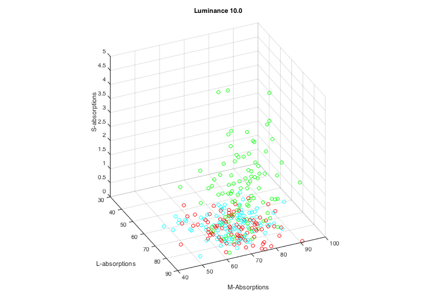
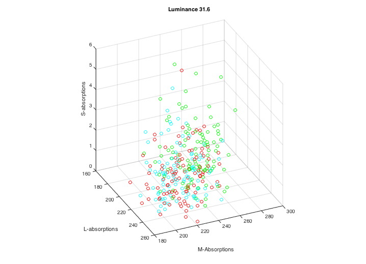
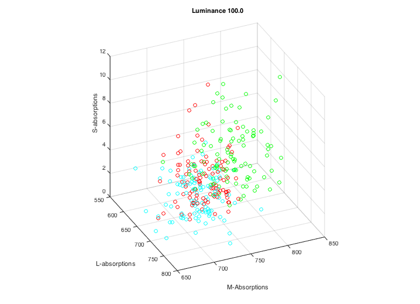
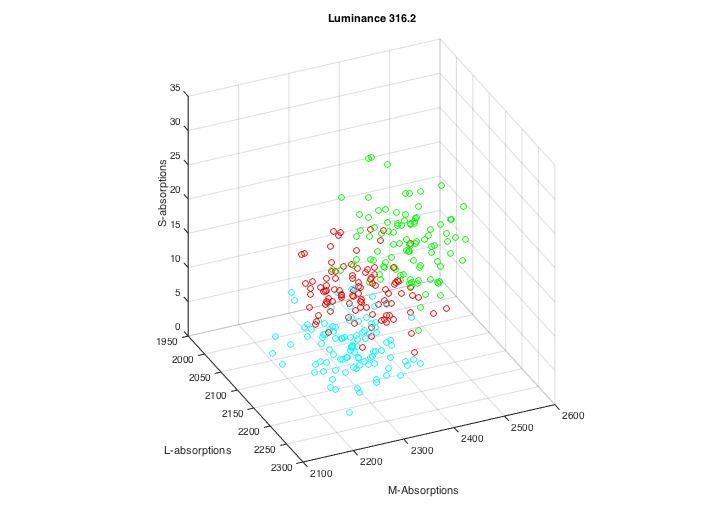
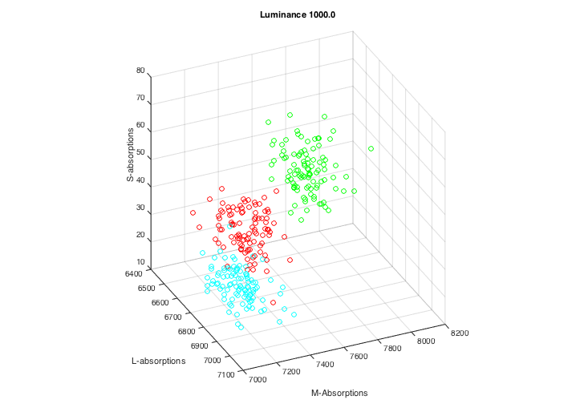

Contents
t_colorWaveDiscrimination
Illustrate how wavelength discrimination depends on the mean luminance level given standard assumptions about photon noise (no photoreceptor noise or neural noise).
BW (c)ISETBIO Team, 2015
%
ieInit
Create a sample cone mosaic
pixel = []; % Make a cone mosaic coneP = coneCreate; coneP = coneSet(coneP,'spatial density',[.1 .6 .2 .1]); % Empty, L,M,S % Here is a look at a typical cone mosaic. Not used later. cSensor = sensorCreate('human',pixel,coneP); cSensor = sensorSet(cSensor,'size',[128 128]); cSensor = sensorSet(cSensor,'pixel size same fill factor',[2 2]*1e-6); cSensor = sensorSet(cSensor,'noise flag',1); % Photon noise only % cSensor = sensorCreate('human'); % Show an image of the mosaic in saturated colors % sensorConePlot(cSensor)
Cone absorption as a function of mean signal level
% Illustrate the separation in the LMS clouds for pairs of wavelengths oi = oiCreate('human');
Set up wavelengths and luminance levels
% Create uniform fields wSamples = [520 525 530]; nWaves = length(wSamples); % Create luminance levels luminance = logspace(1,3,5); nLum = length(luminance); % Number of row/col samples in the scene sz = 64; % We will make a series of scenes at different wavelengths and peak % readiances. We will compute the sensor response. scene = cell(1,nWaves); sensor = cell(1,nWaves); for rr = 1:nLum
for ww=1:nWaves
Create a monochromatic scene and set the radiance
The wavelength is specified in wSamples.
scene{ww} = sceneCreate('uniform monochromatic',wSamples(:,ww),sz);
% Some people scale for luminance, or equal L+M, which we could do.
% We could go equal energy, not equal photon.
scene{ww} = sceneAdjustLuminance(scene{ww},luminance(rr));
% Compute the irradiance at the retina
% (This oiCreate shouldn't be necessary. But there is a problem
% with the monochrome scenes, so we start with a new oi until this
% is fixed. The code runs without this in ISET.)
oi = oiClearData(oi);
oi = oiCompute(oi,scene{ww});
% Create a human sensor.
sensor{ww} = cSensor;
% Integrate for 100 ms.
% Compute the sensor absorptions
sensor{ww} = sensorCompute(sensor{ww},oi);
% Give the scene a name
sensor{ww} = sensorSet(sensor{ww},'name',sprintf('wave %.0f',wSamples(1,ww)));
% If you want to have a look at the image, run this line.
% vcAddObject(sensor{ww}); sensorImageWindow;
ieLuminanceFromEnergy monochrome: 10 nm band assumed
ieLuminanceFromEnergy monochrome: 10 nm band assumed
ieLuminanceFromEnergy monochrome: 10 nm band assumed
ieLuminanceFromEnergy monochrome: 10 nm band assumed
ieLuminanceFromEnergy monochrome: 10 nm band assumed
ieLuminanceFromEnergy monochrome: 10 nm band assumed
ieLuminanceFromEnergy monochrome: 10 nm band assumed
ieLuminanceFromEnergy monochrome: 10 nm band assumed
ieLuminanceFromEnergy monochrome: 10 nm band assumed
ieLuminanceFromEnergy monochrome: 10 nm band assumed
ieLuminanceFromEnergy monochrome: 10 nm band assumed
ieLuminanceFromEnergy monochrome: 10 nm band assumed
ieLuminanceFromEnergy monochrome: 10 nm band assumed
ieLuminanceFromEnergy monochrome: 10 nm band assumed
ieLuminanceFromEnergy monochrome: 10 nm band assumed
end
Extract the data for plotting
L = cell(1,length(wSamples));
M = cell(1,length(wSamples));
S = cell(1,length(wSamples));
% The cones are in slots 2-4 when not ideal
slot = [2 3 4]; % Typical human 1621 case. 1 empty, 6 L, 2 M, 1 S
for ww=1:length(wSamples)
L{ww} = sensorGet(sensor{ww},'electrons',slot(1));
M{ww} = sensorGet(sensor{ww},'electrons',slot(2));
S{ww} = sensorGet(sensor{ww},'electrons',slot(3));
n = min(100,length(L{ww}));
% Make the same length
S{ww} = S{ww}(1:n); M{ww} = M{ww}(1:n); L{ww} = L{ww}(1:n);
end
% Plot the absorptions
f = vcNewGraphWin;
% sym = {'b.','g.','r.','c.','bs','gs','rs','cs','bo','go','ro','co','bx','gx','rx','cx'};
sym = {'bo','go','ro','co',};
az = 65.5; el = 30;
for ww=1:nWaves
s = mod(ww,length(sym))+1;
plot3(L{ww}(:),M{ww}(:),S{ww}(:),sym{s})
view([az el])
hold on
end
title(sprintf('Luminance %.1f\n',luminance(rr)));
xlabel('L-absorptions'); ylabel('M-Absorptions'); zlabel('S-absorptions'); axis square; grid on
     end % vcAddAndSelectObject(sensor{ww}); sensorImageWindow;